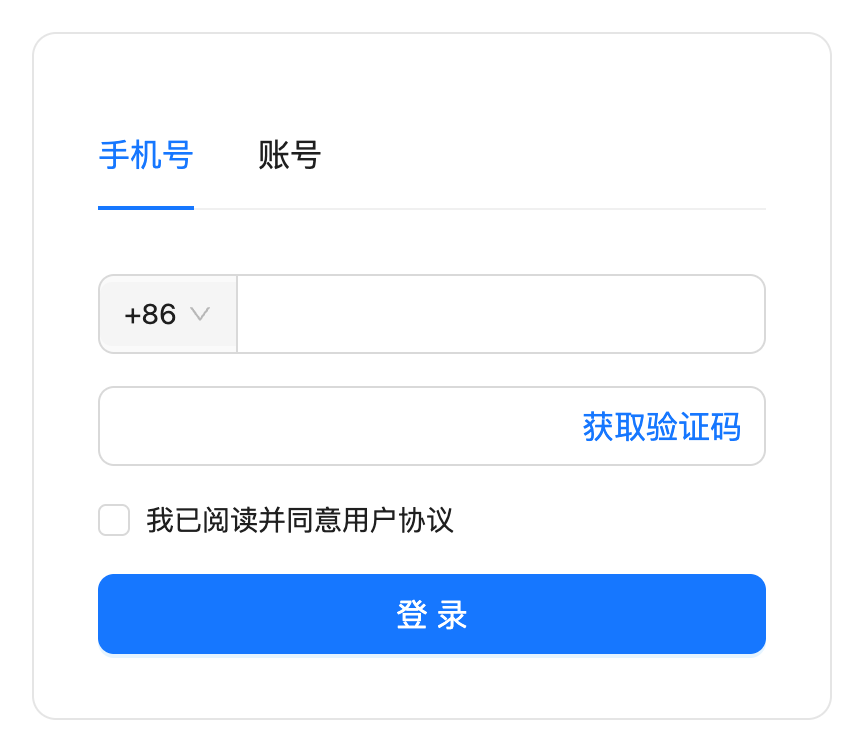
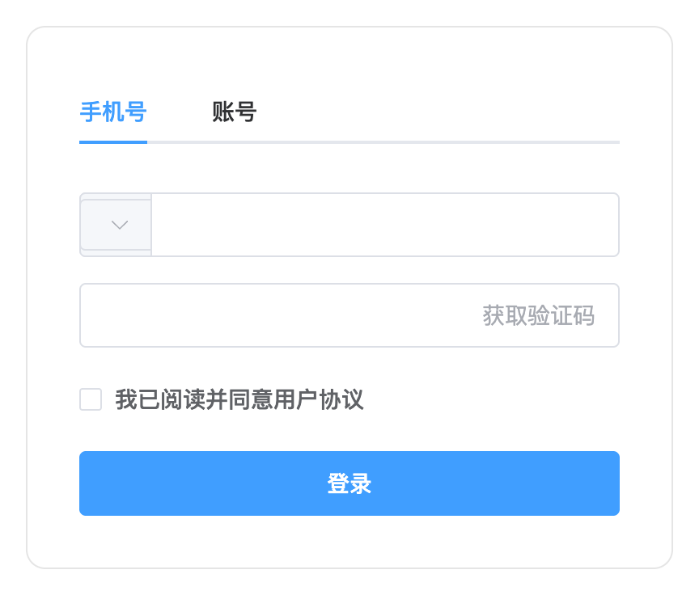
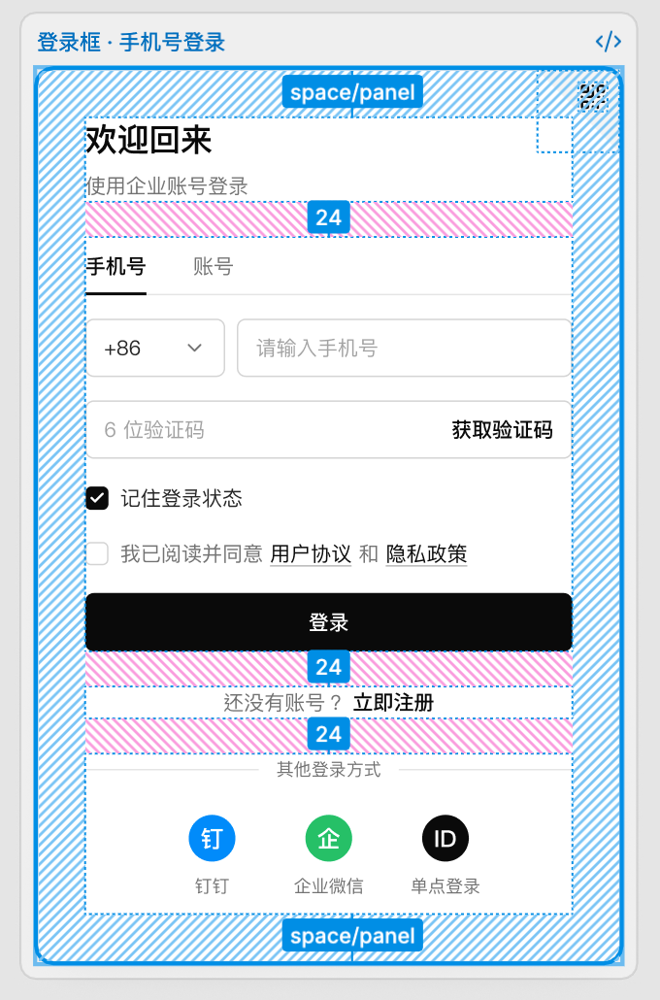
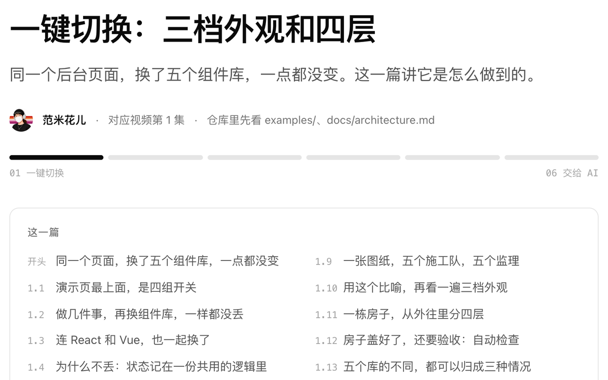

导读
一份设计，如何适配不同组件库
这个系列从视觉、控件、结构与逻辑四个层面拆解页面，介绍如何统一设计要求、处理组件库差异，并验证最终的实现效果。
01第一部分
理解差异
1三步
同一个登录框，五个组件库有哪些差异
第几步
五个组件库 登录框 · 黑白规范真组件，可以点
从第二步到第三步，差的是什么，就是这个系列要讲的。
2常见的做法
三种常见做法，能解决什么、有哪些局限
1
让 AI 直接生成
AI 生成的是 React + Ant Design 的代码，换到 Vue 项目里就无法直接使用。

2
让 AI 去翻译
让 AI 把登录框改成 Vue + Element Plus 后，区号 +86 不见了，「获取验证码」按钮也变成了灰色。更换组件库时，原来的设计细节没有完整保留下来。

3
从设计稿导出代码
在 Figma 里让 AI 照着设计稿还原，标签栏只是两段文字加两条线，点击不会切换，也没有使用组件库。

根上的问题是：不同组件库的写法，本来就不一样。
02第二部分
解决方法
3四层
将界面拆分为四层
把登录框像剖面图一样拆开。
一份 Design.md，只写到了第一层。
4解耦
设计只定义一次，组件库只负责翻译
先把「我们要的设计」和「某个组件库的写法」分开。
以后再加一个组件库，页面、逻辑、规范都不用动，只写一个套件。
5值不值得
适用场景：什么时候值得这样做
要接几套组件库、几种技术栈？
只用一套
一份 Design.md，加上组件库的主题设置。
够了好几套技术栈，或者让 AI 往不同项目里生成界面
设计写一份，每个组件库配一个套件去翻译。
值得做这一层03第三部分
系列内容
6大纲
全部文章和附录
7怎么看
视频、文字版、仓库，配合使用
组件库差异01
一个后台页面，
五个组件库一键切换
五个组件库一键切换
1视频

2文字版
mihua-blocks-open/designs/spec/core/react/vue/audit/examples/docs/skills/AGENTS.md
3仓库
设计只定义一次。
实现，再按不同的技术栈分别去完成。